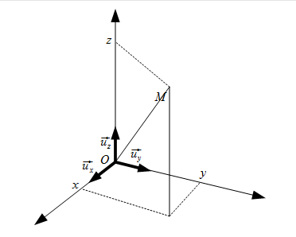

L’objet de la cinématique du point est d’étudier le mouvement d’un point au cours du temps
indépendamment des causes qui produisent le mouvement. Les objectifs sont la détermination
des grandeurs cinématiques telles que les vecteurs accélération, vitesse, position et
l’équation horaire de la trajectoire de ce point par rapport à un référentiel choisi par
l’observateur.
Définitions
Point matériel
On appelle point matériel ou systeme ponctuel un système mécanique de taille macroscopique
mais de dimension négligeable devant son déplacement. Le système mécanique est alors
modélisé par un point géométrique sans dimension et sans forme auquel est associée sa masse.
Événement
Les phénomènes physiques peuvent être considérés comme un ensemble d’événements,
c’est-à-dire des phénomènes élémentaires qui se produisent en des endroits déterminés de
l’espace et à un instant donné.
Temps
En mécanique newtonienne, le temps est une variable scalaire indépendante (généralement
représentée par la lettre \(t\)) qui repère l’instant où un évenement s’est produit. Le
temps ne varie que dans un sens tel que la cause précède l’effet.
Quand on sait classer la succession temporelle des évènements on dit que l’on a établit une
chronologie.
On suppose que le temps est uniforme : les lois de la physique sont invariantes par
translation dans le temps.
Repère d’espace
On appelle repère d’espace un ensemble de points dont les distances sont invariables au
cours du temps. Un tel ensemble est aussi appelé un solide de référence. Par exemple une
table, un bateau, la terre peuvent servir de repère d’espace.
Système de coordonnées
On exprime la position d’un objet par rapport à un système de coordonnées qui est constitué
d’un ensemble de trois axes dont chacun correspond à une direction de l’espace et qui est
considéré comme fixe par rapport à un repère d’espace. On dit que le système de coordonnées
est lié au repère.
On considère que l’espace physique est un espace affine euclidien de dimension 3.
Cela signifie qu’il faut 3 coordonnées pour définir la position d’un point \(M\) quelconque
dans l’espace.
On note \(O\) un point fixe de l’espace qui sert de référence (point origine).
Le point \(M\) est alors repéré par rapport à \(O\) : on note
\( \overrightarrow { r } = \overrightarrow { OM } \)
le vecteur position de \(M\).
Le vecteur \( \overrightarrow{OM} \) est repéré grâce à une base vectorielle notée
\( \left(
\overrightarrow{ u_1 }, \overrightarrow{ u_2 }, \overrightarrow{ u_3 }
\right) \).
La base vectorielle et le point origine constituent un repère d’espace (ou repère de
référence)
\( \left(
O, \overrightarrow{ u_1 }, \overrightarrow{ u_2 }, \overrightarrow{ u_3 }
\right) \).
Le vecteur \( \overrightarrow { OM } \) peut alors se décomposer dans cette base
en :
$$
\overrightarrow { OM } = c_1\overrightarrow{ u_1 } + c_2\overrightarrow{ u_2 }
+ c_3\overrightarrow{ u_3 }
$$
\( (c_1, c_2, c_3) \) sont les coordonnées du vecteur \( \overrightarrow { OM } \)
dans la base
\( \left(
\overrightarrow{ u_1 }, \overrightarrow{ u_2 }, \overrightarrow{ u_3 }
\right) \).
Il est très important de bien choisir le système de coordonnées dans lequel la description
du problème va être faite pour simplifier les calculs.
Système de référence
On utilise pour l’étude de tout mouvement un système de référence ou référentiel formé d’un
repère d’espace (repère de référence) et d’un système chronométrique (horloge) dont la
variable est le temps.
L’hypothèse fondamentale de la cinématique classique est que le temps reste le même dans
tous les systèmes de référence. Changer de référentiel revient donc simplement à un problème
de changement de repère de référence. L’étude du mouvement d’un point d’un solide se fait
donc toujours en précisant le repère de référence.
Trajectoire d’un point matériel
On appelle trajectoire d’un point mobile \(M\) par rapport à un repère de référence
\(R\left(O,\overrightarrow{u_1},\overrightarrow{u_2},\overrightarrow{u_3}\right)\),
l’ensemble des points liés à \(R\) avec lesquels le point \(M\) vient en coïncidence au
cours de son mouvement par rapport à \(R\).
Cette trajectoire est notée \(\Gamma(M)\). Elle est déterminée en exprimant le vecteur
\(\overrightarrow{OM}\) dans le repère \(R\). On obtient ainsi l’équation paramétrique de la
trajectoire.
Vitesse d’un point matériel
Un même déplacement peut se faire pendant des durées différentes. Le rapport de la distance
parcourue \(d\) sur la durée \(\delta t\) mise pour la parcourir appelé vitesse moyenne
\(V_m = \frac{d}{\delta t}\) peut caractériser cette différence. Il est plus intéressant de
définir la vitesse instantanée (vitesse à un instant \(t\), celle par exemple qui apparaît
sur le compteur de vitesse d’un véhicule) qui peut prendre des valeurs très différentes de
celle de la vitesse moyenne.
Soit un point \(M\) mobile par rapport à un repère
\(R\left(O,\overrightarrow{u_1},\overrightarrow{u_2},\overrightarrow{u_3} \right)\).
La vitesse instantanée peut se définir comme une vitesse moyenne entre la position
\(M_1=M(t)\) du point mobile à la date \(t\) et la position \(M_2=M(t+\delta t)\) de ce même
point à la date \(t+\delta t\) où \(\delta t\) représente une durée très faible. Cette
vitesse moyenne tend d’autant plus vers la vitesse instantanée à la date \(t\) que la durée
\(\delta t\) tend vers zéro.
$$
\overrightarrow{v_{M/R}(t)} = \lim_{\delta t \rightarrow 0}
{\frac{ \overrightarrow{OM(t+\delta t)} - \overrightarrow{OM(t)}}{\delta t}}
$$
$$ \boxed{
\overrightarrow{v_{M/R}(t)}
=\left.\frac{\mathrm{d}\overrightarrow{OM(t)}}{\mathrm{d}t}\right|_{R}
}$$
Le vecteur vitesse est donc la dérivée du vecteur position. La norme du vecteur vitesse, que
nous appellerons vitesse, s’exprime, dans le système international, en \(\rm{m.s^{−1}}\).
Accélération d’un point matériel
Tout comme le vecteur vitesse qui rend compte de la variation du vecteur position par
rapport au temps, le vecteur accélération va rendre compte des variations du vecteur vitesse
par rapport au temps. Le vecteur accélération correspond donc à la dérivée par rapport au
temps du vecteur vitesse c’est-à-dire aussi à la dérivée seconde du vecteur position.
L’accélération du point \(M\) par rapport à \(R\) à l’instant \(t\) est :
$$ \boxed{
\overrightarrow{a_{M/R}(t)}=
\left. \frac{ \mathrm{d} \overrightarrow{ v_{M/R}(t) } }{ \mathrm{d}t } \right| _{ R }
= \left. \frac{ \mathrm{d}^2 \overrightarrow{ OM(t) } }{ \mathrm{d}t^2 } \right| _{ R }
}$$
Le vecteur accélération correspond à la variations du vecteur vitesse par unité de temps.
L’accélération s’exprime, dans le système international, en \(\rm{m.s^{−2}}\).
Expression en coordonnées cartésiennes
Système de coordonnées cartésiennes
Définition
Soit un point fixe \(O\) (appelé origine), et une base orthonormée directe
\( \left( \overrightarrow{u_x}, \overrightarrow{u_y}, \overrightarrow{u_z} \right) \) fixe.

schéma coordonnées cartésiennes
Dérivées temporelles par rapport au repère
\(\left( O, \overrightarrow{u_x}, \overrightarrow{u_y}, \overrightarrow{u_z} \right) \)
Les vecteurs \(\overrightarrow{u_x}\), \(\overrightarrow{u_y}\) et \(\overrightarrow{u_z}\)
étant fixes dans le repère de référence \( \left( O, \overrightarrow{u_x},
\overrightarrow{u_y}, \overrightarrow{u_z} \right) \), leur dérivée par rapport au temps est
nulle.
Position
Dans ce système de cordonnée, le vecteur \( \overrightarrow{ OM } \) s’exprime de la
façon suivante :
$$
\overrightarrow{ OM } = x\overrightarrow{ u_x } + y\overrightarrow{ u_y }
+ z\overrightarrow{ u_z }
$$
L’abscisse \(x\), l’ordonnée \(y\) et la cote \(z\) sont les coordonnées cartésiennes du
point \(M\).
Vitesse
La vitesse du point \(M\) par rapport à \(R\) est :
$$ \begin{align}
\overrightarrow{v_{M/R}(t)} & =
{ \left. \frac{ \mathrm{d} \overrightarrow{OM} }{ \mathrm{d}t } \right| }_{ R } \\
& = { \left. \frac{\mathrm{d}}{\mathrm{d}t}
\left(
x\overrightarrow{u_x} +y\overrightarrow{u_y} +z\overrightarrow{u_z}
\right)\right| }_{ R } \\
& = \frac{\mathrm{d}x}{\mathrm{d}t}\overrightarrow{u_x}
+ x {\left.\frac{\mathrm{d}\overrightarrow{u_x}}{\mathrm{d}t}\right|}_{R}
+\frac{dy}{dt}\overrightarrow{u_y}
+ y {\left.\frac{\mathrm{d}\overrightarrow{u_y}}{\mathrm{d}t}\right|}_{R}
+\frac{dz}{dt}\overrightarrow{u_z}
+ z {\left.\frac{\mathrm{d}\overrightarrow{u_z}}{\mathrm{d}t}\right|}_{R}
\end{align} $$
$$ \boxed{
\overrightarrow{v_{M/R}(t)} = \dot{x}\overrightarrow{u_x}
+ \dot{y}\overrightarrow{u_y}
+ \dot{z}\overrightarrow{u_z}
} $$
Accélération
L’accélération du point \(M\) par rapport à \(R\) est :
$$ \begin{align}
\overrightarrow { a_{M/R}(t) } & =
{ \left. \frac{ \mathrm{d}\overrightarrow{v_{M/R}}}{\mathrm{d}t} \right| }_{ R } \\
& = { \left. \frac{\mathrm{d}}{\mathrm{d}t} \left(
\dot{x}\overrightarrow{u_x}
+ \dot{y}\overrightarrow{u_y}
+ \dot{z}\overrightarrow{u_z}
\right)
\right| }_{ R }
\end{align} $$
$$ \boxed{
\overrightarrow { a_{M/R}(t) } = \ddot{x}\overrightarrow{u_x}
+ \ddot{y}\overrightarrow{u_y}
+ \ddot{z}\overrightarrow{u_z}
} $$
Expression en coordonnées cylindriques
Système de coordonnées cylindriques
Définition
Soit le repère \( \left( O,\overrightarrow{u_x}, \overrightarrow{u_y},
\overrightarrow{u_z} \right) \) précédemment défini.
Soit \(M\) un point que l’on cherche à repérer.
L’axe privilégié du problème est placé suivant \(\left(O,\overrightarrow{u_z}
\right)\).
Soit \(H\) le projeté de \(M\) sur le plan \( \left( O,\overrightarrow{u_x},
\overrightarrow{u_y} \right) \), et \(Z\) le projeté de M sur l’axe \(\left(O,
\overrightarrow{u_z}\right)\).
Le point \(M\) est repéré par :
\(r\) la distance de \(M\) à l’axe \(\left(O,
\overrightarrow{u_z}\right)\), soit la distance \(ZM\)
La base locale associée à ce système de coordonnées cylindriques est notée
\( \left( \overrightarrow{ u_r }, \overrightarrow{ u_\theta },
\overrightarrow{ u_z } \right) \) avec :
\(\overrightarrow{u_r}=\frac{\overrightarrow{OH}}{OH}\), c’est le vecteur radial
\(\overrightarrow{ u_\theta }\) se déduit de \(\overrightarrow{ u_r }\) d’une rotation
de \(\frac{\pi}{2}\) autour de \(\left(O,\overrightarrow{ u_z }\right)\), c’est le vecteur
orthoradial
\(\overrightarrow{ u_z }\) complète le trièdre direct (\(\overrightarrow{ u_z } =
\overrightarrow{ u_r } \wedge \overrightarrow{ u_\theta }\))
schéma coordonnées cylindriques
Dérivée temporelle du vecteur \(\overrightarrow{ u_r }\) mobile dans \(R\)
Dans ce système de cordonnée, le vecteur \( \overrightarrow{ OM } \) s’exprime de la
façon suivante :
$$
\overrightarrow{ OM } = r\overrightarrow{ u_r } + z\overrightarrow{ u_z }
$$
Vitesse
La vitesse du point \(M\) par rapport à \(R\) est :
$$ \begin{align}
\overrightarrow{v_{M/R}(t)} & =
\left. \frac{ \mathrm{d} \overrightarrow{ OM } }{\mathrm{d}t} \right|_{ R } \\
& = {\left. \frac{\mathrm{d}}{\mathrm{d}t} \left(
r\overrightarrow{ u_r } + z\overrightarrow{ u_z }
\right)
\right|}_{ R }\\
& = \frac{\mathrm{d}r}{\mathrm{d}t}\overrightarrow{ u_r }
+ r { \left. \frac{\mathrm{d}\overrightarrow{ u_r }}{\mathrm{d}t} \right| }_{ R }
+ \frac{\mathrm{d}z}{\mathrm{d}t}\overrightarrow{ u_z }
+ z { \left. \frac{\mathrm{d}\overrightarrow{ u_z }}{\mathrm{d}t} \right| }_{ R }
\end{align} $$
$$ \boxed{
\overrightarrow{v_{M/R}(t)} = \dot{r}\overrightarrow{ u_r }
+ r\dot{\theta}\overrightarrow{ u_\theta }
+ \dot{z}\overrightarrow{ u_z }
}$$
Soit le repère \( R= \left( O,\overrightarrow{u_x}, \overrightarrow{u_y},
\overrightarrow{u_z} \right) \) précédemment défini.
Soit \(M\) un point que l’on cherche à repérer.
Soit \(H\) le projeté de \(M\) sur le plan \( \left( O,\overrightarrow{ u_x },
\overrightarrow{ u_y } \right) \).
La base locale associée à ce système de coordonnées sphériques est notée
\( \left( \overrightarrow{ u_r }, \overrightarrow{ u_\theta },
\overrightarrow{ u_\varphi } \right) \) avec :
\(\overrightarrow{u_r}= \frac{\overrightarrow{OM}}{OM}\), c’est le vecteur radial
\(\overrightarrow{ u_\theta }\) est alors un vecteur du plan vectoriel
\( \left(\overrightarrow{ u_z },\overrightarrow{ u_r }\right) \) et se déduit de
\(\overrightarrow{ u_r }\) d’une rotation de \(\frac{\pi}{2}\), c’est le vecteur
orthoradial
\(\overrightarrow{ u_\varphi }\) complète le trièdre direct
(\(\overrightarrow{ u_\varphi } = \overrightarrow{ u_r } \wedge
\overrightarrow{ u_\theta }\)). C’est un vecteur du plan vectoriel
\( \left(\overrightarrow{ u_x },\overrightarrow{ u_y }\right) \) car il est
orthogonal à \( \overrightarrow{ u_z } \)
schéma coordonnées sphériques
Projection des vecteurs mobiles dans le repère
\( R = \left(
O, \overrightarrow{u_x}, \overrightarrow{u_y}, \overrightarrow{u_z}
\right) \)
Exprimons les vecteurs \(\overrightarrow{ u_r }\), \(\overrightarrow{ u_\theta }\)
et \(\overrightarrow{ u_\varphi }\) dans le repère \( \left( O,
\overrightarrow{ u_x }, \overrightarrow{ u_y }, \overrightarrow{ u_z } \right) \).
Soit \(H\) la projection de \(M\) sur le plan \( \left( O, \overrightarrow{ u_x },
\overrightarrow{ u_y } \right) \).
Le vecteur unitaire \(\overrightarrow{ u } \) suivant la droite \((OH)\) a pour
expression :
$$
\overrightarrow{u} = \cos(\varphi)\overrightarrow{u_x}
+ \sin(\varphi)\overrightarrow{u_y}
$$
Le vecteur \(\overrightarrow{u_\varphi}\) est directement perpendiculaire à
\(\overrightarrow{ u }\) et s’écrit donc :
$$
\overrightarrow{ u_\varphi } = -\sin(\varphi)\overrightarrow{u_x}
+\cos(\varphi)\overrightarrow{u_y}
$$
Le vecteur position se note :
$$ \overrightarrow{ OM } = r\overrightarrow{ u_r }$$
Le rayon \(r\), la colatitude \(\theta\) et l’azimut \(\varphi\) sont les
coordonnées sphériques du point \(M\).
La position de chaque point doit être définie par un unique triplet
\( \left( r,\theta,\varphi \right) \). \(r\) ne varie donc que de \(0\) à
\(\infty \), \(\theta\) varie de \(0\) à \(\pi\) et \(\varphi\) varie de \(0 \) à
\(2\pi \).
Vitesse
La vitesse du point \(M\) par rapport à \(R\) est :
$$ \begin{align}
\overrightarrow{v_{M/R}(t)} & =
{ \left. \frac{ \mathrm{d} \overrightarrow{ OM } }{ \mathrm{d}t } \right| }_{R} \\
& = \left.\frac{\mathrm{d}\left(r\overrightarrow{u_r}\right)}{\mathrm{d}t} \right|_{R} \\
& = \frac{\mathrm{d}r}{\mathrm{d}t}\overrightarrow{u_r}
+ r{ \left.\frac{\mathrm{d}\overrightarrow{u_r}}{\mathrm{d}t} \right| }_{R}
\end{align} $$
$$\boxed{
\overrightarrow{v_{M/R}(t)} = \dot{r} \overrightarrow{u_r}
+ r\dot{\theta}\overrightarrow{u_\theta}
+ r\sin(\theta)\dot{\varphi}\overrightarrow{u_\varphi}
} $$
Soit un point \(M\) mobile par rapport à un repère \(R\left(O,\overrightarrow{u_1},
\overrightarrow{u_2},\overrightarrow{u_3}\right)\).
Soit \(\Gamma(M)\) la trajectoire de \(M\) par rapport à \(R\).
On définit :
une orientation de \(\Gamma(M)\)
une abscisse curviligne \(s\) à partir d’une origine arbitraire \(M_0\)
\(\vec{t}(s)\) le vecteur unitaire tangent en \(M\) à \(\Gamma(M)\)
Le plan osculateur en \(M\) est la limite du plan
\(\left(\vec{t_1},\vec{t_2}\right)\) lorsque \(s_2\) tend vers \(s_1\).
On définit alors le repère de Frenet \(\left(M,\vec{t},\vec{n},\vec{z}\right)\)
avec :
\(\vec{t}(s)\) vecteur unitaire tangent à la trajectoire en \(M\) et de même sens que
le mouvement
\(\vec{n}(s)\) normale principale en \(M\) à \(\Gamma(M)\) appartenant au plan
osculateur et dirigé vers le centre de la courbure
\(\vec{z}(s) =\vec{t}(s) \wedge \vec{n}(s)\)
On définit aussi le cercle de courbure ou cercle osculateur à la courbe en \(M\), le cercle
de centre \(C\) et de rayon \(\rho\) tangent à \(\Gamma\) en \(M\) tel que
\(\overrightarrow{MC} = \rho \vec{n}\).
Repère de Frenet.
Formules de Frenet
Par définition, on a :
$$
\boxed{ \vec{t}(s)=\left.\frac{\mathrm{d}\overrightarrow{OM}(s)}{\mathrm{d}s}\right|_{R} }
$$
De plus si on définit \(\alpha\) comme étant l’angle polaire au point \(M\) on a :
$$
\frac{\mathrm{d}\vec{t}}{\mathrm{d}t} =
\frac{\mathrm{d}\vec{t}}{\mathrm{d}\alpha} \times
\frac{\mathrm{d}\alpha}{\mathrm{d}s} \times
\frac{\mathrm{d}s}{\mathrm{d}t}
$$
Et comme \(\mathrm{d}s = \rho\mathrm{d}\alpha\) et
\(\frac{\mathrm{d}\vec{t}}{\mathrm{d}\alpha} = \vec{n}\) on a :
$$
\frac{\mathrm{d}\vec{t}}{\mathrm{d}t} = \vec{n} \times \frac{1}{\rho}
\times \frac{\mathrm{d}s}{\mathrm{d}t}
$$
Soit au final :
$$
\boxed{ \frac{\vec{n}(s)}{\rho} = \left. \frac{\mathrm{d}\vec{t}}{\mathrm{d}s} \right|_{R} }
$$
Vitesse
L’expression du vecteur vitesse dans le repère de Frenet devient :
$$ \begin{align}
\overrightarrow{v_{M/R}(t)} & =
\left. \frac{ \mathrm{d}\overrightarrow{OM(t)} }{\mathrm{d}t} \right| _{ R } \\
& = \frac{ \mathrm{d} \overrightarrow{OM}}{ds} \cdot \frac{\mathrm{d}s}{\mathrm{d}t}
\end{align}
$$
$$
\boxed{ \overrightarrow{v_{M/R}(t)} = \dot{s}\vec{t} }
$$
On en déduit que la vitesse d’un point est colinéaire à la tangente à sa trajectoire.